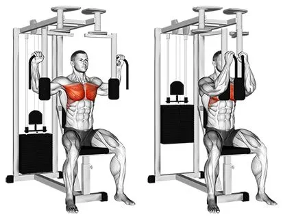
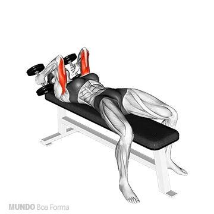

VOADOR (PECK DECK) - 3x10
Fazer pico de contração de 2 segundos em todas as repetições, irá segurar na frente.
PUXADA ALTA NA FRENTE PRONADA - 4X15-12-10-8
Aumentando a carga em cada série + Drop Set na ultima. Terminando a carga em cada série.

REMADA UNILATERAL COM HALTER (SERROTE) - 4X15/12/10/8
Aumentando a carga em cada série.

DESENVOLVIMENTO DE OMBRO COM HALTERES - 3X15
Pode ser a barra pequena de fazer biceps;

ELEVAÇÃO LATERAL COM HALTERES - 4X12
Fazer pico de contração de 2 segundos em cima, controlar a descida.

TRÍCEPS TESTA COM HALTER - 4X10 + ROSCA MARTELO COM HALTER - 4X12.
Drop Set em todas as séries. Pico de contração em cima de 2 segundos na rosca.
